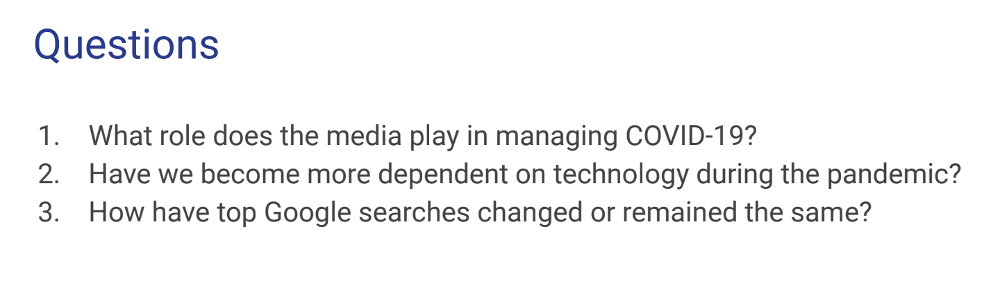

Indonesian Medical Heros (2021)
Death is pretty interesting, in that there is grief and sadness but it brings people together in expressing love and memories.”

Role of Media in Managing Pandemic (2021)
Student sought to explore the questions listed here.
“Detached” Economic Realities of the COVID-19 Era (2021)
On the other hand some people fled dense metropolitan areas for their secluded country mansions and villas.
Others (almost) seamlessly transitioned to remote work. And the newly designated “essential workers” kept us fed, provided medical care at extreme personal risk. Sounds like a recipe for tumbling market indices but instead the stock market kept growing and growing in leaps and bounds.
For me throughout COVID-19 I see my friends from two different backgrounds. I have friends with investment portfolios going up double digits and there are people who cannot pay their rents.
Based on personal experience, student eloquently begins the conversation on the detached economic realities brought into stark relief during the COVID-19 pandemic.
Research on Memorials for Mass Death Events (2021)
Student’s Final Reflections:
“Most of the information pertaining to specific communities is done by accumulating submissions from community members. I would like to continue this research by focusing on the following: Memorials around other viral outbreaks globally & Community memorials around mass death.”
“Datasets that I would be interested in seeing: Queer/trans lives impacted by COVID(race, ethnicity, age, location, wealth, income) & Datasets showing COVID impact by wealth and income.”
“I am also interested in telling the story of those impacted by COVID and HIV/AIDS.”
Political Decisions and the Course of the Pandemic in Israel
(2021)
Visualizing Statistics on Mental Health of Healthcare
Workers in the Pandemic (2022)
Project Rationale: “Young adults have experienced a number of pandemic-related consequences, such as closures of universities and loss of income, that may contribute to poor mental health. During the pandemic, a larger than average share of young adults(ages 18-24) reported symptoms of anxiety and/or depressive disorder (56%). Compared to all adults, young adults are more likely to report substance use (25% vs. 13%) and suicidal thoughts (26% vs. 11%). Prior to the pandemic, young adults were already at high risk of poor mental health and substance use disorder, though many did not receive treatment.”
COVID-19 Data Visualization using Tableau (2022)
Data visualizations analysis include:
- Heatmap (Total deaths vs. Per Capita deaths)
- Fatality Rate Comparisons over time (early in the pandemic vs Spring 2022)
- NYC Fatality Rate Over Time
- Case Growth in NYC
- Tri-State Weekly Case Growth %
Developed App using R to Allow Users to View Cases and Deaths
by County Over Time for the Entire Pandemic (2022)
Love & Loss – Exploring Data Humanism for COVID-19
Data Visualizations (2022)
I want to tell story in a light but beautiful way.
Project Rationale: It’s easy to forget but important to remember. COVID-19 Data often shows in countries/ regions, but we need to look deeper. I want to figure out the relation between race, occupation, living places, and the risk of infection. Using different scales to make people gain more insights about what going on in different groups of people.
Love & Loss DocumentationDesigning Modular Local COVID-19 Memorials with Community Input (2022)
Project Rationale: Covid-19 Memorials are massive in scale aimed at demonstrating the sheer numbers of those lost. While names and faces are included in some of them the impact of each still feels like it highlights more the mass scale of the pandemic and brings up feelings of how the crisis was handled. Memorials also tend to have a single location and pilgrimages are made to visit it and remember in one site, but (while I would argue Covid was not a communal experience in the way the AIDS crisis was) Covid was a universal experience (in a way US citizens don’t usually experience) and I think a memorial should reflect that through its accessibility. I think a Covid-19 memorial would benefit from being smaller and more localized.
Effect of Travel Ban on Chinese Citizens and Residents in America (2022)
Love letter to Billie Holiday (2023)
Project Rationale: Jazz is one of my favorite genres of music. After taking the Jazz History class in my second year, I became aware of the struggles the musicians I am listening to were facing.
3D map visualizations-COVID-19 Data Visualization (2023)
Project Rationale: With that inspiration, Cara set out to build on work by Patrick Nasralla and create a 3D visualization of COVID-19 cases and death on a global scale for the duration of time when global data was being collected. Remarking on the limited timeframe of the Nasralla 3D globe and its failure to account for small regions, Cara continued to work on her project, making it a central application of the COVID-19 Impact Project.
Tracking Drug War Deaths in the Philippines (2023)
Project Rationale: Anthony was motivated by a concern that there is a tendency to forget major traumatic episodes in Philippine history. He wanted to combine the hard disturbing facts that the data on drug war deaths illustrated, with the stories of the human beings caught up in this war.
The Disappearing Restaurants near Beijing University Campus and the Memory Lost (2023)
Project Rationale: She was curious as to whether there was data on restaurant closures in Beijing and whether it was linked to the COVID pandemic. Having found the data she sought to humanize the numbers with a photo journalistic essay juxtaposing the past and the present.
Visualization of the Energy-Environment Relationship (2023)
Through the analysis of a comprehensive dataset encompassing key parameters such as appliance usage, indoor and
outdoor temperatures, humidity levels, and meteorological data, my primary aim is to unveil a compelling narrative that provides insights into optimizing energy consumption for a more sustainable lifestyle. Employing data analysis and visually engaging representations, I endeavor to articulate the story concealed within energy use and offer pragmatic recommendations for fostering a greener future.
Project Rationale: Zhiyang attended the world’s largest youth-led energy conference (Student Energy Summit 2023) in Dubai, and was inspired to find, unpack and visualize data pertaining to the patterns of daily energy consumption in today’s households. By using data as a tool, I aim to offer valuable insights into energy consumption patterns that can aid in making informed decisions towards a greener and more sustainable world.
Impact of COVID-19 on Mental Health and Related Services (2023)
COVID-19 has not only brought about mental issues for more individuals but has also impacted mental health services, making it difficult for many individuals with mental illnesses to seek treatment. I have heard of cases where patients were unable to receive treatment due to quarantine and ran out of medication, leading to a worsening of their mental health conditions. Project Inspiration: Callie was curious about whether or not there was data that would provide insight on how mental health and mental health resources in different populations were affected by the COVID-19 pandemic.
What aspects of this course were the most important or helpful to you? — Reviewing examples of successful story telling using data visualization.
There is a lot to cover and 3 weeks is tough. I appreciate the inspiration I got out of the course and look forward to incorporating it into my art practice ! Thank you !
The project structure and feedback opportunities were really helpful. I felt like I was able to craft and develop an idea that was thoughtful, interesting, and utilized the information in the course.
All the information they [shared] was very interesting, they encourage you to be creative and make your project as the best as you can.
What aspects of this course were the most important or helpful to you? — Going through different storytelling methods, seeing how making meaning out of raw data can affect human lives.
I liked that people came to the course with different perspectives, whether they wanted to create memorials, visualize data, tell stories, or program. I felt like I learned a lot from my peers.
What aspects of this course were the most important or helpful to you? — Looking at different approaches and voices for covid memorials and grieving; learning about the historical data visualization is helpful as well.